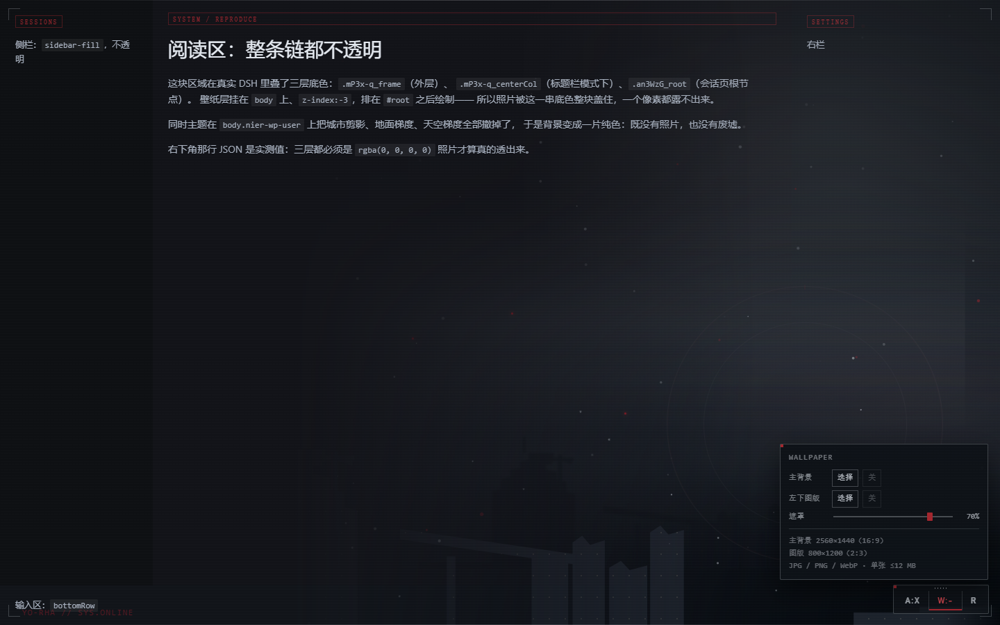
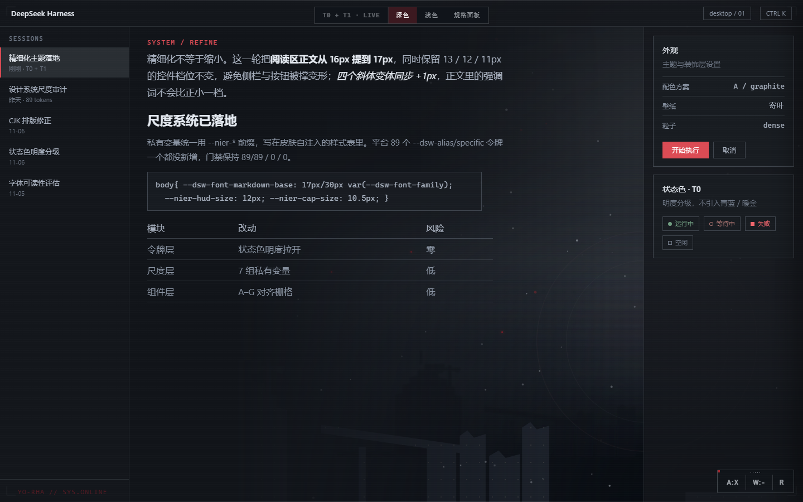
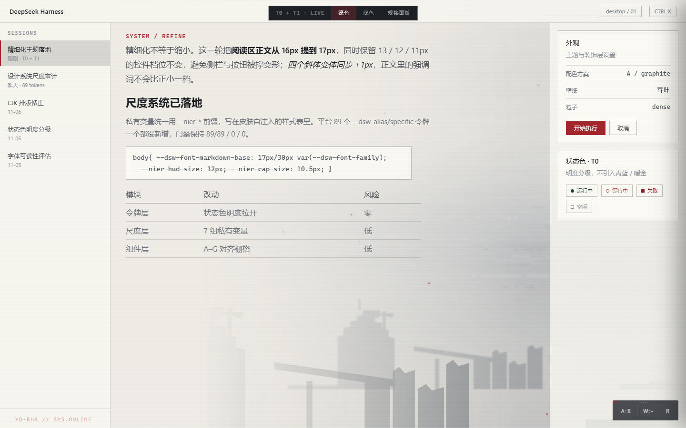
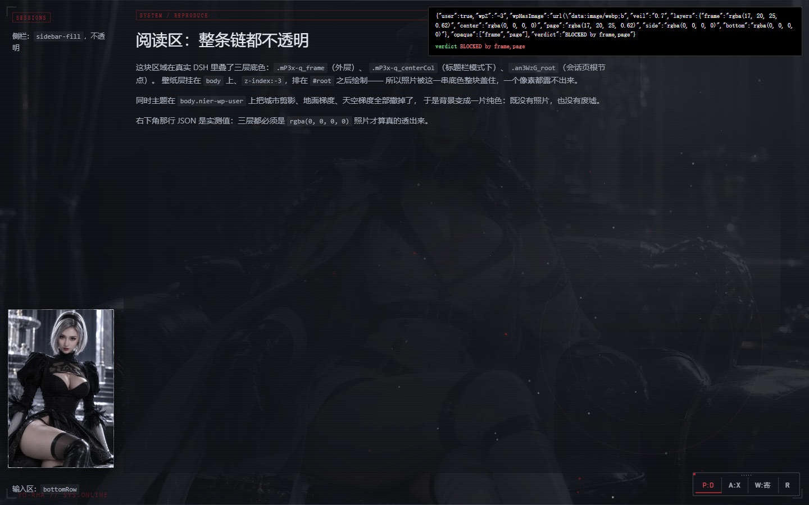
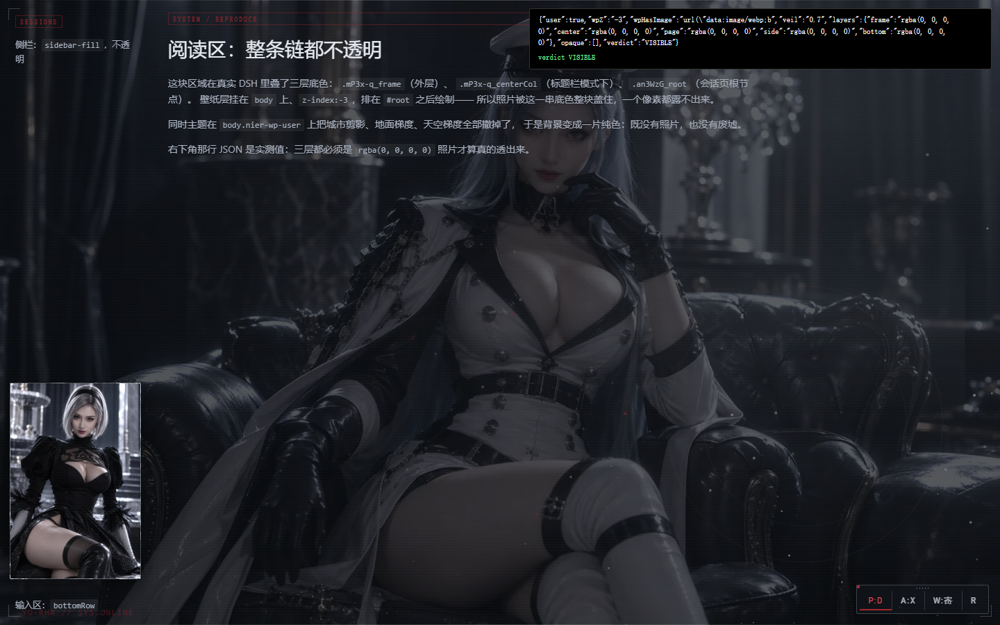

入口在右下角控制坞的 W 键。面板里是两个位置（全幅主背景 + 左下 2:3 图版）和一个遮罩滑杆。 不带任何出厂图。图片只存在浏览器本地，不上传、不联网、不经过任何服务端。
v1.1 的包 655 KB 里 85% 是五张 base64 图（一张立绘 + 四张壁纸）。那些是《尼尔：机械纪元》的 美术资源，随 MIT 包分发等于把它们再授权出去——作者没有这个权利。所以 v2.0 全部拆掉， 场景改成纯 CSS 画。
代码 96 KB ＋ 五张 base64 图 558 KB。图是随包分发的，而包里只有一份 MIT 许可。
只有代码与 CSS，图片 0 张。场景用渐变和遮罩画，壁纸由使用者自己上传。

三行：主背景、左下图版、遮罩。前两行各两个按钮：选择 与 关。
控制坞读数跟着走：W:U 自选 / W:- 空。
| 状态 | 存的值 | 面板按钮 | 看到什么 |
|---|---|---|---|
| 空 | 没有这个键，或 "off" | 关（禁用态） | 什么都不画，露出废墟场景 |
| 自选 | data:image/… | 选择 | 自己上传的图 |
没有「默认」这一态，因为没有出厂图可回。空位就是空位，关 等于清空。
深色遮罩 70%

浅色遮罩 74%

右下角那条天际线是一条 1 KB 的 SVG 路径当 mask-image，颜色由 CSS 给——
所以明暗两套共用一个遮罩，不用为浅色再存一张图。再叠地平线渐变、两层雾和飘灰粒子。
这是主题唯一「自带」的画面，而且它不含任何第三方图形。
照片是 body 子元素、z-index:-3；遮罩 -2；场景 0；
界面在更上面。正文永远坐在遮罩之上，所以调的是「背景有多亮」，不是「字有多清楚」。
拿两张亮度差很大的图各测一遍（把文字涂透明再截一张，逐像素比，只取笔画内部、排除 1px 分隔线）： 暗的 p50 11.1:1 / p10 4.4:1，亮的 p50 8.8:1 / p10 4.4:1——都压在 AA 线上。 你放的图如果亮部特别大，把滑杆往右拉一档就够了。
| z | 层 | 说明 |
|---|---|---|
| −3 | 壁纸照片 | #dsh-skin-nier-wp，fixed 铺满，cover |
| −2 | 遮罩 | #dsh-skin-nier-wpveil，--nier-veil |
| 0 | 场景 | #dsh-skin-nier-scene：天际线、地平线、雾、粒子 |
| 1 | 左下图版 | #dsh-skin-nier-plate，2:3 |
| 9997 | 控制坞 + 面板 | W 键开合，可拖动，位置也记在 localStorage |
照片层挂上了、data URL 也在，背景却是一块纯色。宿主给外壳的每一层都写了底色：
.frame（外层，Windows 实心 / macOS 透明）→ .centerCol /
.bottomRow / .sidebarCol → 会话页根节点。照片是 body 的子元素、
z-index:-3，被整摞盖住——漏任何一层，症状都一模一样。
预览里的深色来自 #dsh-skin-nier-scene（z-index:0，是 body 的子元素），
照片在它下面但仍在 body 底色之上；而且预览页根本没有宿主这些盒子。
预览能显示 ≠ 真机能显示。
修之前BLOCKED by frame,page

修之后VISIBLE · 五层全透明

两张都是 preview/_repro-host.html：按 app.asar 里的原样重建了整摞壳
（类名带哈希前缀、含 #root、含会话页根节点），加载真的 lib/client.js，
右上角直接给出 VISIBLE 或 BLOCKED by …。修法是照片开着时让整摞底色让位，
压暗交还给本来就该干这事的遮罩：
body.nier-wp-user [class*='centerCol'],body.nier-wp-user [class*='rightbarCol'],
body.nier-wp-user [class*='bottomRow'],body.nier-wp-user [class*='sidebarCol'],
body.nier-wp-user [class*='_frame'],body.nier-wp-user [class*='_root'],
body.nier-wp-user [class*='_page'],body.nier-wp-user [class*='_screen'],
body.nier-wp-user [class*='_mainPanel']{background-color:transparent}
选择器用子串匹配而不是全名，因为宿主给类名加了每次构建都可能变的前缀（今天是 mP3x-q_centerCol，
明天未必），只有 _name 尾巴稳定。特异性 (0,2,1) 已经压过宿主的 (0,1,0)，
不需要 !important。
.frame，而且读到的是
[data-platform=darwin] 那条「frame 透明」的规则（Windows 上它是实心的）。症状与完全没修一样，
看起来像「修了没用」。现在的兜底是不依赖类名的：照片开着时沿内容主轴
（#root → 面积最大的子元素 → …，最多 8 层）把仍不透明的整屏盒子清成透明，遇到
position:fixed 就停（那是对话框）。复现页加 ?inline=1 会给三层写内联底色，
CSS 清不掉，此时仍然 VISIBLE —— 说明兜底真的在工作。
修完后在同一页重测正文对比度：p50 12.3:1 / p25 8.0:1 / p10 5.5:1（2358 个笔画内部像素）。
这两张是 1.1.0 时期拍的——那时包里还带出厂图，正好用来演示「图挂上了但被壳盖住」。 v2.0 拆掉素材后故障机制没变：只要放了图，就得靠同一套让位规则才能看见。